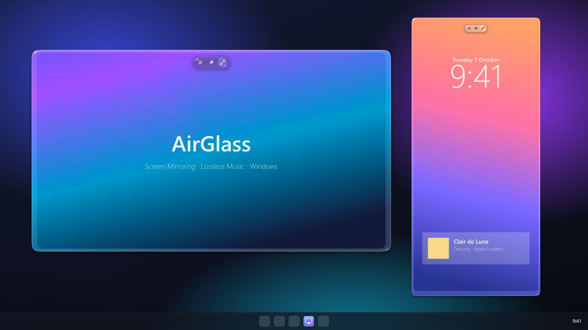

Mirror two iPhones or iPads to one Windows PC
Screen Mirroring normally hands one device to a PC at a time. AirGlass Pro keeps two devices mirroring at once, each in its own floating glass window on the same desktop.

Why you'd want two devices on one PC
A side-by-side demo of two phones, a teacher's iPad next to a student's, comparing an app on two OS versions, or just not wanting to disconnect one phone to show another — any of these need more than one device on screen at the same time. By default, AirPlay receivers (including AirGlass's own free edition) only keep one sender mirroring; whichever device starts next takes over.
Mirror two devices at once
- Install AirGlass and get Pro. Download the installer; two-devices-at-once is part of the $9.99 one-time Pro upgrade.
- Mirror the first device. Open Control Center's Screen Mirroring and choose your PC. The first glass window appears.
- Mirror the second device. Do the same from the second iPhone, iPad or Mac. A second glass window opens next to the first, on whichever side has more room, shrinking if it needs to.
- Both keep mirroring. Each window has its own video decoder and, if you're recording, its own recorder. Tools like recording, drawing and media controls act on whichever window you used last.
What happens with a third device
Two devices is the limit at once. If a third device starts mirroring, it takes over whichever of the two sessions began mirroring first — the newest two are always the ones on screen. The free edition works the same way but with a limit of one: a new device always takes over, and the first time a second device tries to take over, AirGlass offers the Pro upgrade instead of silently dropping the first one.
Two devices at once is part of AirGlass Pro, $9.99 once.
Download AirGlassQuestions
Can I mirror two iPhones to the same PC at the same time?
Yes, with AirGlass Pro. Mirror the first device as normal, then mirror the second: a second glass window opens next to the first, each with its own decoder and recorder, and both keep mirroring at once.
What happens with a third device?
The third device takes over whichever of the two sessions started mirroring first. Two devices can mirror at once; a third always replaces the oldest of the two.
Is mirroring two devices at once free?
No, it's part of AirGlass Pro ($9.99 one-time, up to 3 PCs). The free edition mirrors one device at a time: a new device takes over from the first, and the first time that happens AirGlass offers Pro.
Does each device get its own window?
Yes. Each mirrored device has its own floating glass window, positioned next to the other with more room to fit, and shrinks if it has to. Tools like recording and media controls follow whichever window you used last.
Related: iPad to a classroom projector · Record your iPhone screen · Compare AirPlay receivers